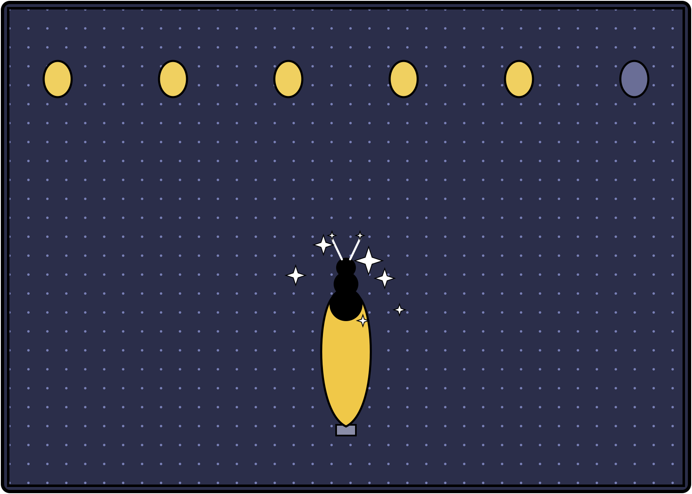

Print setup
Ctrl/Cmd + P · Paper size A4 · Margins: None · Scale: 100%
Issue 4 — generated in Fable-Offline via the bubble-tea-news-editor skill.
No Menace Watch this issue (monthly, not weekly — Gordon Slate last ran Issue 3, not due
again until roughly Issue 7); Issue 2's rotating cast and Issue 3's leftovers fill the
slots instead. All three ad boxes carry real advertisers this issue: Overload NZ 2026
(continuing its run from Issue 3), Modoo (a local milk tea review blog), and I Love
Takapuna (promoting its new bubble tea beginner's guide).
Auckland · Weekly Edition
BUBBLE TEA NEWS
Issue 4 · 7 August 2026 · Complimentary — please take onebubbletea.nz · est. 2026
Breaking · Birchfield Apartments
Balcony Fairy-Light Canopy Now Spans Six Units, Risk Assessed Low-to-Moderate
Case definition: any balcony extending string lighting across shared courtyard airspace to a neighbouring unit. Four confirmed households as of Monday, up from one after a well-attended barbecue three weekends back, with two more units reportedly sourcing extension cords. The body corporate's newsletter has added "airspace usage" as a standing agenda item, stopping short of a formal wattage cap.
community-outbreak-bulletin
Investigations · Case File
Exhibit C: A Custom Property Named --puddle-shine
M. Voss, Investigations Desk
Two rival car-wash sites, four suburbs apart, share a CSS custom property named --puddle-shine, spelled identically, pun and all. A shared web agency is the leading theory; a popular template marketplace is the alternative this paper has yet to rule out. Neither site carries an old copyright year to hang a timeline on.
Music · Review
Two Covers, One Real
Rebecca Black
"Landline" by Sable Court plays like a demo somebody was too scared to finish and released anyway — good scared, the kind that means it's honest. The other single this week, a glossy cover I won't name because the original doesn't deserve the association, sounds like it was written by a committee that has never once missed a phone call.
Home Front · Sebastian's Watch
The Dishwasher, and the Third Rack Nobody Asked For
The realm's cutlery lay scattered in the sink like a defeated army, and Sebastian, alone, unthanked, sorted it by size and purpose the way a general once sorted units before a battle he can no longer quite picture. The third rack — the one for the flat things nobody in this house has ever used correctly — he loaded first, out of respect for the underdog. Nobody noticed. He noticed.
Sebastian
Technology · Product
The Position
Steve Jobs
We moved the charging port four millimetres to the left. That's the fact. For thirty years humanity has plugged in its devices without asking whether the port was in the right place. We asked. Four millimetres doesn't sound like much until your thumb finds it without looking. This isn't a port. It's where you were always meant to plug in. One more thing: it's still white.
Bubble Tea Trivia
Did You Know?
Pearl milk tea's actual origin is a decades-old dispute: both Chun Shui Tang and Hanlin Tea Room, two Taichung tea houses, claim to have invented it in the early 1980s — and the argument has never been definitively settled.
In Every Issue
A new logic puzzle
Fresh local trivia
A rotating cast of columnists
Local ad space, weekly
Menace Watch, monthly — the editor's turn
"Nobody noticed. He noticed."
— Sebastian, on the third rack nobody asked for
Joke of the Week
Why did the customer bring a ruler to the bubble tea shop? To make sure they were getting a fair shake.
Overload NZ 2026
26–27 Sept · NZ International Convention Centre. Tickets: overload.co.nz — about seven weeks out.
BUBBLE TEA NEWS · A weekly complimentary read for Auckland bubble tea retailers · All content satire/character-voice per each contributor's house disclaimer.
Bubble Tea News
Feature · Outer Reaches
The Buyer Who Didn't Count It Twice
The buyer counted the shards once, fast, the way people count things they've already decided to take. The patrol schedule gave him maybe six minutes at that checkpoint gap, and he'd spent four of them arguing a price he didn't really care about. The smallest shard in the lot — the one he'd almost left in the dust for looking wrong, too dull — was the one his hand went to first, like it already knew whose pocket it belonged in. He didn't say anything. He just let go of it, took the credits, and didn't watch which way the buyer walked.
Luke Skywalker, dispatched from the Jedha debris fields
Books · The Duckworth Scale
Five Duckworths, Cancelled, Then Reinstated Out of Spite
Daffy Duck
Started "Th' Migration" at a five — a memoir about inthtinct and knowing when to leave, thpoke to me perthonally. Chapter theven: four whole pageth prai-thing a flock of geeth for "formation dithcipline" without one word about the tholo actor who broke rankth and made it thouth firtht. Dropped to zero on principle. My editor, a nervouth pig who fact-checkth me mid-review, pointed out it wath two pageth, not four. Fine. Four Duckworths.
Field Notes · Sanctuary
Enclosure Eleven, and the Word Rehabilitation Never Quite Earns
Alan Grant
0630. Enclosure eleven, juvenile male, weight gain steady, still won't take food from a gloved hand. I used to write reports about animals gone longer than recorded history bothers to count. Now I write reports about one animal that will not trust a hand, and I understand him perfectly, and there is nothing in either career that taught me what to do about it except show up again tomorrow with the same glove.
Automotive · Showroom
Route 9 Motors: The Apex Clearance
You don't test-drive this minivan. You take delivery of it the way you take a chequered flag — with respect, and slightly out of breath. Zero to committed in under a weekend. Financing tighter than a Monaco hairpin. This is not a used Corolla. This is a podium finish with cup holders. (Route 9 Motors is a fictional dealership. Not a real endorsement.)
Lewis Hamilton
Puzzle of the Week
The Delivery Manifest
Last week's Grover Street Line-Up, resolved in full: Straw led the parade, Pearl came second, Cup brought up the rear. Clue three — Pearl not last — is the one that finally rules out the only other order the first two clues still allowed.
Milkwood's own rider delivered the oolong leaves.
The Fetchly rider did not deliver the tapioca pearls.
Brisk warm-up · who delivered the condensed milk? Answer next week — Ken Endo
Profile · A Life, Counted
Loaf Forty-One, and the Part I Can't Get Right
Forty-one loaves since I started, and the crust still comes out even when I want it uneven — a small, stupid failure that shouldn't matter and does. I can hold a temperature to a tenth of a degree if I choose to. I have never once chosen to, not for this. The woman at the counter who tastes my bread every Tuesday doesn't know I'm counting the loaves, or that I've been counting something since before her grandmother was born. She just says it's good. I have decided to believe her at full value, no cross-check, which is either progress or a vulnerability I haven't finished assessing.
Wren
Classifieds · Te Mana Whakaatu Framework (parody, non-affiliated)
This Week's Classifieds, Rated
FOR SALE: Slightly haunted rice cooker, R13. Contains mild peril (three unexplained burnt batches) and coarse language directed at an inanimate object. LOST CAT: "Biscuit," G. Contains no violence, mild emotional intensity regarding a torn cat-flap. Ratings satire only; not affiliated with the real Classification Office of New Zealand.
In Memoriam
The Single-Strand Balcony
Skeletor
Birchfield's balconies once carried, at most, one modest string of lights apiece — a reasonable arrangement, largely beneath my notice. Six units and one barbecue later, that restraint is dead, and I did not kill it, though I will confess to admiring the ambition of whoever did. An empire built on extension cords is still an empire. I've seen worse foundations hold Eternia itself. Mourn the single strand if sentiment moves you. I am too busy taking notes.
Ask the Captain
Dimly Lit in Birchfield
Horatio McCallister
"My new partner strings fairy lights on every surface in the house and I secretly hate it." Dimly Lit, a soul that hangs light where there was dark before is not a soul to argue with lightly. I once served under a captain who lit the whole deck for no reason but joy. Annoyed me for a decade. Miss it now. Let her have the lights. Fair winds.
The Boba Side

The Boba Side — original pen-and-paper gag, hand-drawn
Next week: Issue 5 excludes only this week's roster, bringing back Nixon, Sherman McCoy, and Priya Anand's second report, alongside Shaggy & Scooby and Winnie Zhao, still waiting since Issue 2. Menace Watch remains off until roughly Issue 7.